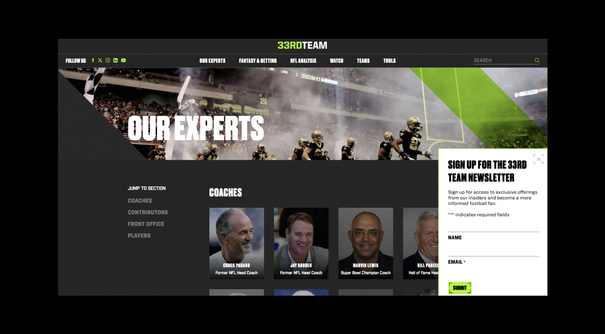
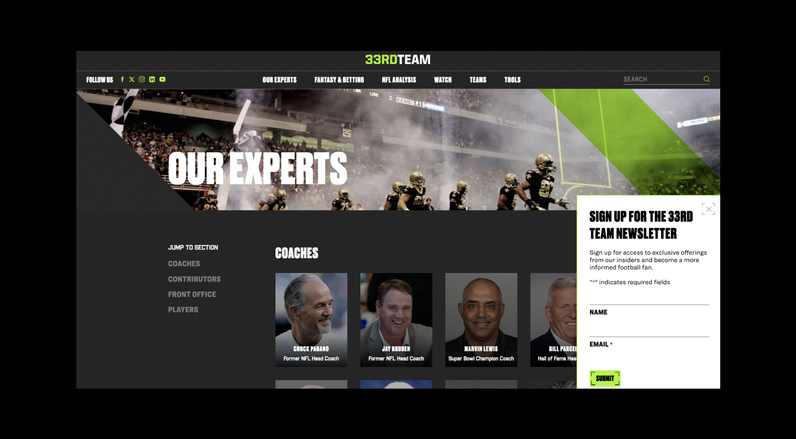

WORDPRESS, PHP, HTML, SCSS, JS

 

The 33rd Team produces NFL content and film breakdowns from current and former players, coaches and executives. I worked with my team of developers, designers, and project managers at CMYK to develop this website redesign.
Key features I worked on:
— Homepage latest lockup block
— Footer newsletter block & popup
— Search page
— Sidebar widgets
— Ari's Newstracker block & widget